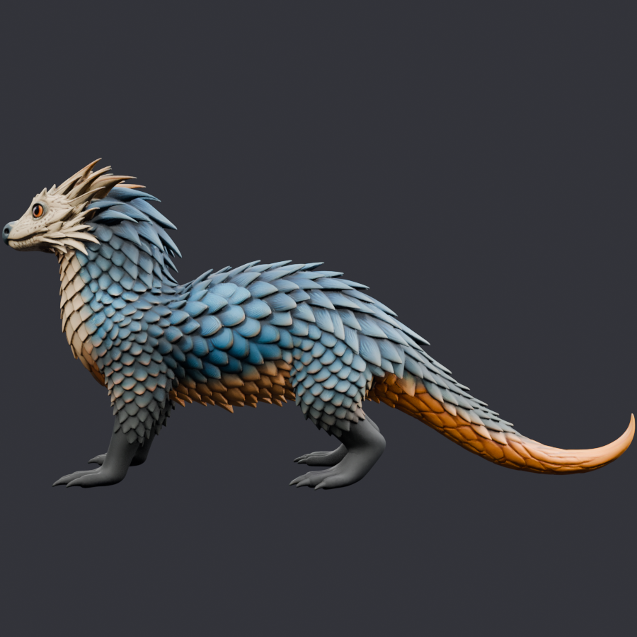
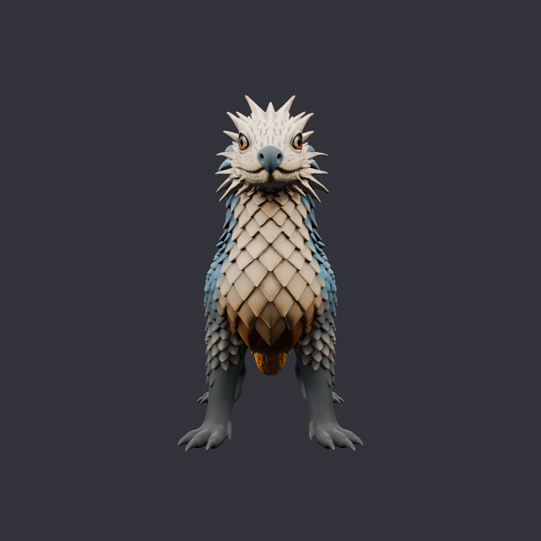
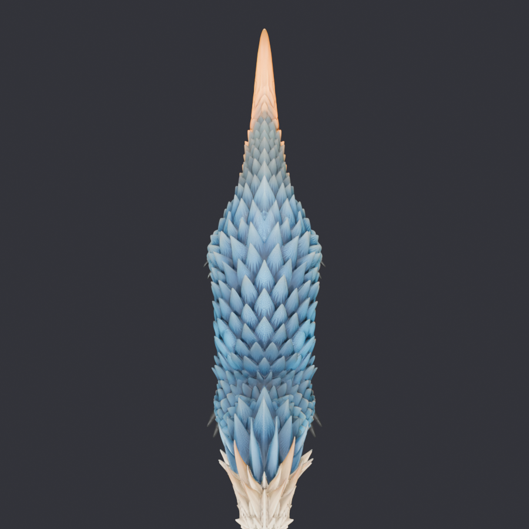
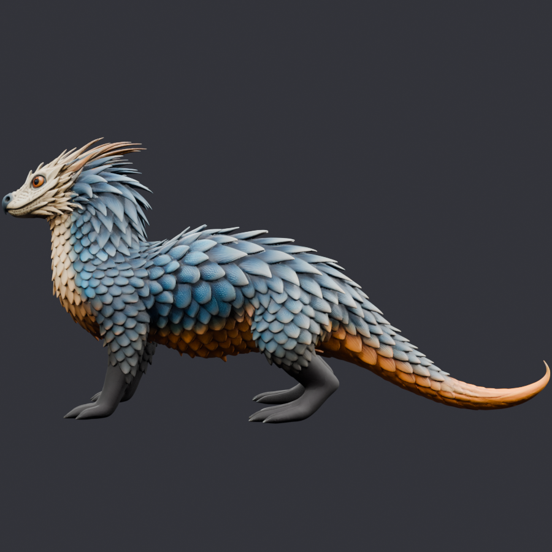

Ground truth (no narrative this time). Two new Meshy runs fired with full approved sheet + new rear repose. Renders pass pose gate cleanly — standing quadruped, tail free, no extras. But the upgraded MESH COHERENCE gate (new critical check per Fable) fails on both: r1 has 532 islands with main_island only 3.8% of faces, tail disconnected in tail region; r2 has 612 islands with same fragility. Generator is fragmenting armor scales into per-scale shells — same class as the duplicate-tail defect.
Overnight rule hit: "max 2 Meshy runs; both fail → halt for morning." Halted. No Rodin overnight. Five morning paths queued on STATE.md.

r1 side — renders clean
r1 rear — single tail visible
r1 top
r2 sideTasks: r1=019fc655-2598 (rendered clean), r2=019fc655-38ce. Inputs: walk.png, front2.png, threequarter_stand2.png, rear_repose.png (new, committed bd6ea17).
state: halted-morning